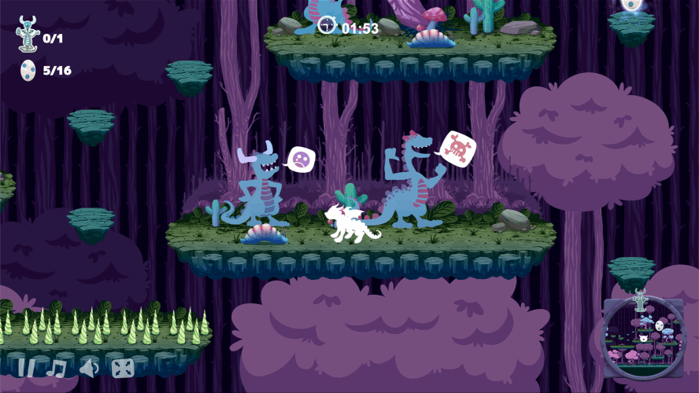
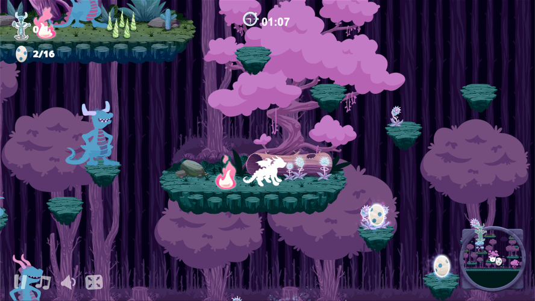
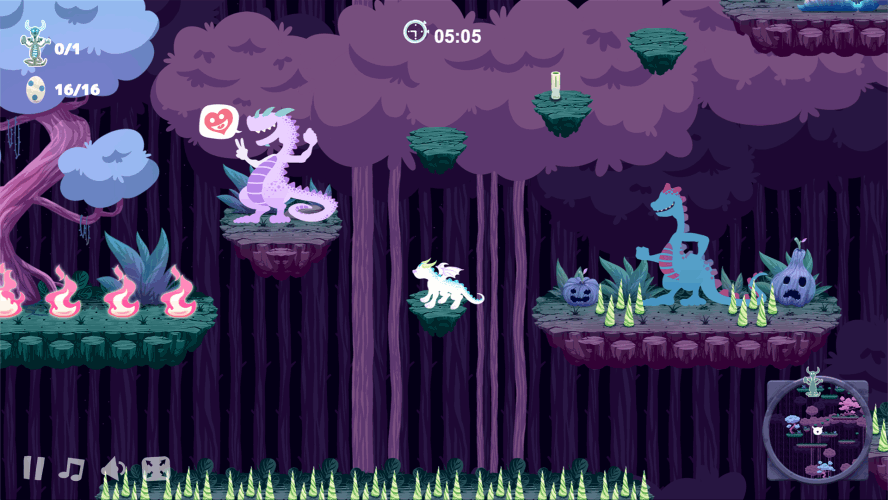

Unbully is a game where you control Tales, a small dragon who is bullied by the other dragons. Your goal is to help him cross the forest, collecting lost eggs and discovering your own unique paths of exploration. By overcoming challenges, Tales earns the trust of the other dragons, who begin to support him and adopt positive behaviors. An adventure and exploration game that encourages reflection on respect, friendship, and courage.




Project title: “UNBULLY: The potential of recreational fantasy video games in combating online hate speech among young people”.
This doctoral project investigates online hate speech among children and young people, exploring the potential of recreational fantasy video games as tools for awareness-raising and indirect social intervention. Grounded in the current context of digital environments - where practices of intolerance, prejudice, and exclusion are often normalized - the research proposes the video game as an artistic, cultural, and social medium capable of fostering critical reflection and empathy.
The project focuses on the development and analysis of a recreational fantasy video game, conceived primarily for entertainment and played freely in informal contexts. The research seeks to understand how this type of playful experience can contribute to the construction of a counter-narrative to hate speech without resorting to explicit or moralizing pedagogical strategies. Through symbolic narratives, fictional characters, and imaginary worlds, the game invites players to confront situations of intolerance and exclusion, promoting values of respect, diversity, and social coexistence in an implicit and experiential manner.
The project’s theoretical framework lies at the intersection of digital artistic practices, digital artivism, and video game culture, recognizing fantasy as a particularly effective narrative resource for addressing socially sensitive themes. The research approaches the video game as a contemporary artistic practice capable of articulating aesthetic expression, active participation, and social reflection.
The adopted methodology combines practice-based artistic research - centered on the creative, conceptual, and technical processes of video game development - with participatory action research. Qualitative methods are also employed, including content analysis, participant observation, and the collection of player testimonies. The project’s implementation includes making the game publicly available online and enabling its experimentation by children and young people in both informal contexts and accompanied settings, such as schools or workshops. Alongside the game, an online form is provided through which participants can share perceptions, experiences, and reflections related to the themes addressed.
The video game developed within the scope of this research is titled Unbully and is available online at: https://unbully.gevan.art
The project expects its results to demonstrate the potential of recreational fantasy video games as a counter-narrative to online hate speech and as a tool for indirect social intervention. The research aims to contribute to the creation of more inclusive digital environments and to the academic debate surrounding the role of interactive media, artistic research, and digital artivism in promoting values of respect, empathy, and diversity.